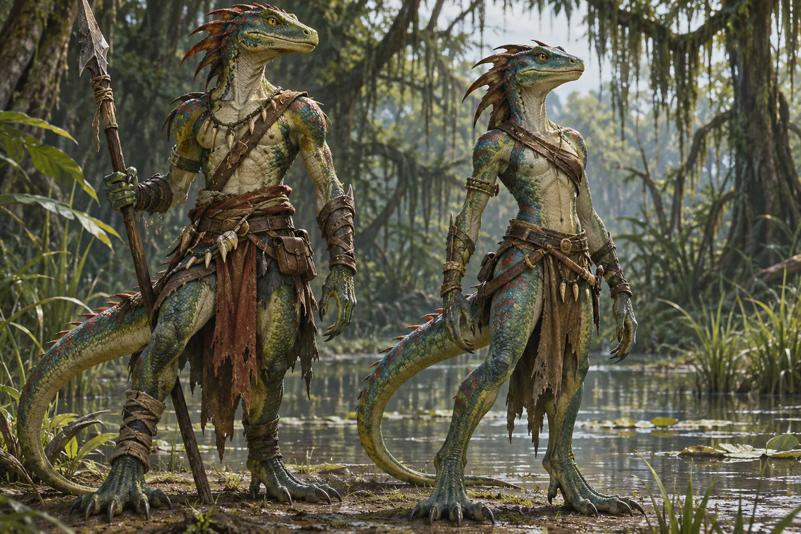
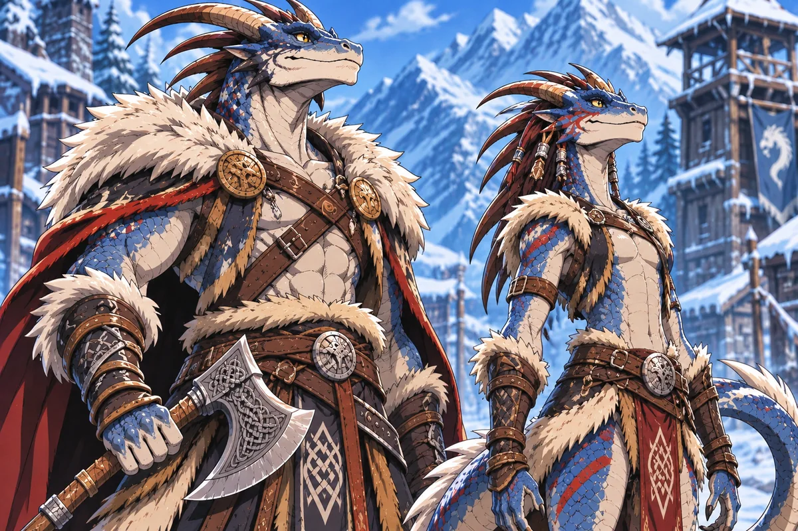

Una stirpe antichissima
I Draki sono annoverati tra i popoli più antichi di Ellan. Le loro leggende narrano di antenati draghi, creature possenti che avrebbero attraversato i cieli quando il Mana scorreva libero. Secondo queste tradizioni, gli antenati cambiarono forma per sopravvivere a un'epoca di sconvolgimenti. Gli studiosi non concordano sull'attendibilità di tali racconti: per i Draki sono soprattutto il segno di un'identità condivisa.
Fratelli lontani
La stirpe comprende due grandi famiglie: Lucertoloidi e Draconici. Entrambe si riconoscono parte dello stesso antico popolo, ma la distanza fra i territori settentrionali e meridionali ha reso i contatti rarissimi. Ciascuna comunità ha sviluppato usanze proprie, senza perdere del tutto il senso della parentela.
I Lucertoloidi del sud

Diffusi nelle paludi dei Reami e nelle altre terre umide, i Lucertoloidi hanno corpi snelli e sinuosi, muscoli elastici, lunghe code robuste, musi allungati e spesso pupille verticali. Le loro scaglie possono essere verdi, nere, rosse, blu o bianche. Abitano villaggi e insediamenti tribali fra fiumi, acquitrini e foreste paludose. Generalmente territoriali, osservano con prudenza chi attraversa le loro terre.
I Draconici del nord

Più alti e massicci dei Lucertoloidi, i Draconici hanno una postura quasi del tutto eretta, teste simili a quelle di grandi sauri e talvolta corna, creste ossee o placche craniche. Le loro scaglie presentano spesso riflessi d'oro, argento, bronzo, rame e ottone. Non esiste più un loro regno settentrionale: vivono in piccoli gruppi, talvolta isolati, talvolta accanto ai Noren di Iceblood, con i quali alcune comunità convivono da generazioni.
Comunità e autorità
Non esiste una forma di governo comune a tutti i Draki. Alcuni insediamenti si affidano agli anziani, altri a capi guerrieri o a guide ereditarie. L'autorità nasce dalle tradizioni e dalle necessità locali, senza un'organizzazione politica che unisca l'intera stirpe.
Religione e spiritualità
In generale i Draki sono poco spirituali. Le storie degli antenati draghi sono tramandate come leggende identitarie, non come un culto religioso universale. Singole persone o comunità possono seguire credenze differenti, senza un sacerdozio comune alla stirpe.
La magia perduta
Molti Draki ritengono che gli antenati possedessero poteri arcani ben maggiori di quelli oggi conosciuti. Nelle comunità contemporanee la magia è poco diffusa e chi ne possiede il talento è considerato soprattutto una persona dalle capacità rare, non necessariamente una figura sacra o temuta. L'antica grandezza magica appartiene ai racconti e alle convinzioni della stirpe.
Incontri con gli altri popoli
La differenza fra nord e sud emerge anche nell'accoglienza degli stranieri. Molti Draconici settentrionali, abituati a vivere vicino ai Noren di Iceblood, hanno familiarità con la convivenza e gli scambi. I Lucertoloidi meridionali sono spesso più diffidenti e attenti ai propri territori. Si tratta di tendenze, non di regole assolute: ogni individuo e ogni comunità possono comportarsi diversamente.
Il passato e il presente
I Draki conoscono le leggende ancestrali, ma la maggior parte è più interessata alla vita presente che alla ricerca delle proprie origini. Gli anziani possono tramandare racconti e memorie locali; non esiste tuttavia un obbligo condiviso di custodire cronache o studiare la storia remota.
Guerra e difesa
Non tutti i Draki condividono lo stesso ideale guerriero. Alcuni villaggi coltivano disciplina e abilità marziali, altri considerano il combattimento una necessità da evitare quando possibile. Anche la reputazione di fierezza dei Draconici del nord non definisce ogni comunità: il rapporto con la guerra dipende soprattutto dalla storia e dalle scelte locali.
Vivere tra i Draki
Ciascun insediamento affronta la vita quotidiana secondo le risorse disponibili e le condizioni del luogo. Nelle paludi e nelle terre fredde i mezzi di sussistenza e i rapporti con gli altri popoli possono cambiare molto. La stirpe non possiede un modello economico unitario.
I Draki nelle avventure
Un Draki può essere custode del proprio villaggio, viaggiatore, artigiano, cacciatore, guida o individuo dotato di un raro talento magico. Le sue decisioni dipendono dal carattere, dall'educazione e dalle esperienze, non da un destino imposto dal sangue. La memoria dei draghi accompagna i racconti della stirpe, ma non stabilisce chi debba diventare ogni Draki.